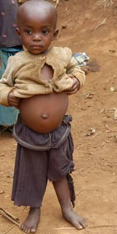
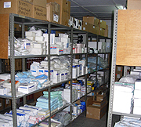

|
|
Die Situation
Für die Kinder in den Dritte Welt Ländern ist Unterernährung eines der größten Probleme. Nach Experten Ansicht ist jeder 5te Mensch auf der Erde betroffen. Die meisten dieser Menschen leben in den Entwicklungslaendern und sind ueberwiegend Kinder, die sich nicht wehren koennen.
Man spricht von einem toten Kind alle 3 Sekunden, etwa 16.000 Kinder taeglich und jaehrlich fast 7 Millionen Kinder die am Hunger und den Folgen sterben.
400 Millionen Kinder leiden unter den Mangelerscheinungen der wichtigsten Vitamine und unsaubares Trinkwasser, die sie zum Ueberleben und zum Wachsen benoetigen. Jedes Jahr erblinden unter anderem etwa 2 Millionen Kinder aufgrund von Vitamin A Mangel und davon leben mehr als 80% von dieser Zahl in Afrika und anderen Entwirklungslaendern.
Ueber 50% von allen Kindern, die unter 2 Jahren sind, leiden in diesen Laendern an Anaemie (Blutarmut) durch Eisenmangel. Sie sind oft blass, ermueden rasch, fuehlen sich schwach und leiden an Atemnot. Groessere Kinder sind genauso betroffen, denn ueber 1 Milliarde Kinder und Jugendliche leiden an Hunger oder den damit verbundenen Krankheiten, wir sprechen von ueber 45% aller Kinder.
Wie die städtische Kroo Bay Klinik in Freetown Sierra Leone sind viele Kliniken und Krankenhäuser in vielen afrikanischen Ländern mit kranken und verletzten Menschen überfüllt, aber es fehlt an lebenswichtigen Medikamenten, Gerätschaften und qualifiziertem Personal.
Jedes Jahr sterben Millionen ( vor allem Kinder) an Krankheiten wie Malaria, Tuberkulose, Typhus, und AIDS. Experten nennen diese Krankheiten “Krankheiten der Armut” weil diesen Menschen zuallererst das Wissen fehlt, wie man diese Krankheiten verhindern kann, hinzu kommt, daß sie in Zuständen leben, die die Krankheiten fördern und es fehlen die notwendigen Medikamente, um diese Krankheiten zu behandeln.
Und das, obwohl diese Krankheiten durch Informationen/ Wissen, Medizin, Nahrung und so einfache Dinge wie z. B. Moskitonetze, nahrhafteres Essen oder sauberes Trinkwasser behandelbar, abwendbar und heilbar sind. KAP kämpft mit Ihrer Hilfe, um mit Strategien diese Krankheiten zu reduzieren und die Lebensqualität der Betroffenen in Afrika zu verbessern.
Das Kinder Afrika Projekt kümmert sich um langfristige Entwicklungsprojekte. Dies beinhaltet ortsansässige Mobil-Kliniken in Gebieten, in denen die Krankenhäuser schlecht zu erreichen sind, Impfungen, Nahrung, sauberes Wasser, Röntgengeräte etc. Die Unterstützung der mobilen Kliniken ist der einfachste Weg, um die Kinder in den Dörfern zu erreichen.
Neben Schutzimpfungen für die Kinder und die Vorsorge für die Eltern kümmert sich KAP weiter um die Hygiene, Verteilung der Medikamente und die Feststellung der Mangelerscheinungen durch Hunger.
Gemeinschaftliche Gesundheitsprogramme unterstützen die Ausbildung von einheimischem Pflegepersonal, welches überwiegend von Frauen ausgebildet wird.
Die Voraussetzungen für dieses Programm sind Mobilität, qualifiziertes Personal und finanzielle Unterstützung. Stellen Sie sich vor, man ist wegen 50 Kilometern einen ganzen Tag unterwegs, Mütter und Kinder warten auf Medikamente, die nicht ankommen, man fährt über Straßen, die von Matsch und Regen überschwemmt sind.
Ihre Unterstützung sichert die Verbesserung der Lebensumstände für die Kinder dort. Jeder Cent zählt.
"Das Kind ist immer noch Symbol einer ständigen Vereinigung von Liebe und Pflicht."
George Eliot
|